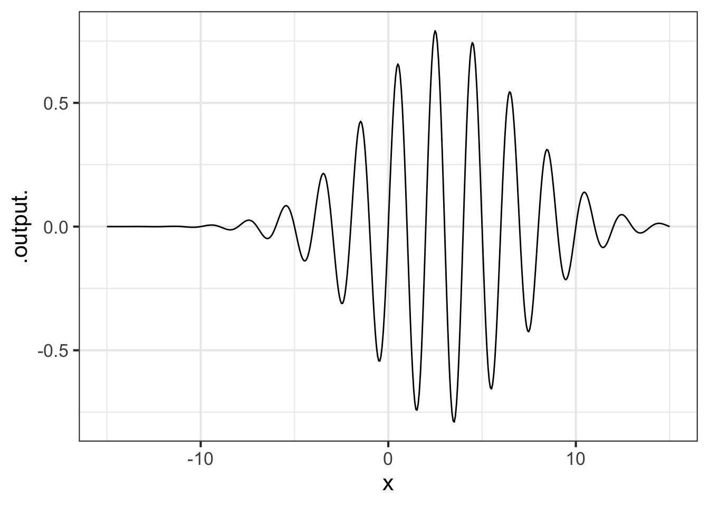
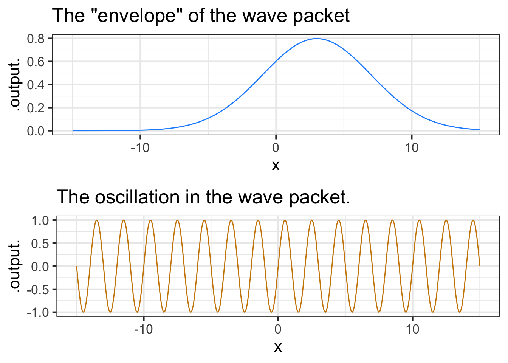
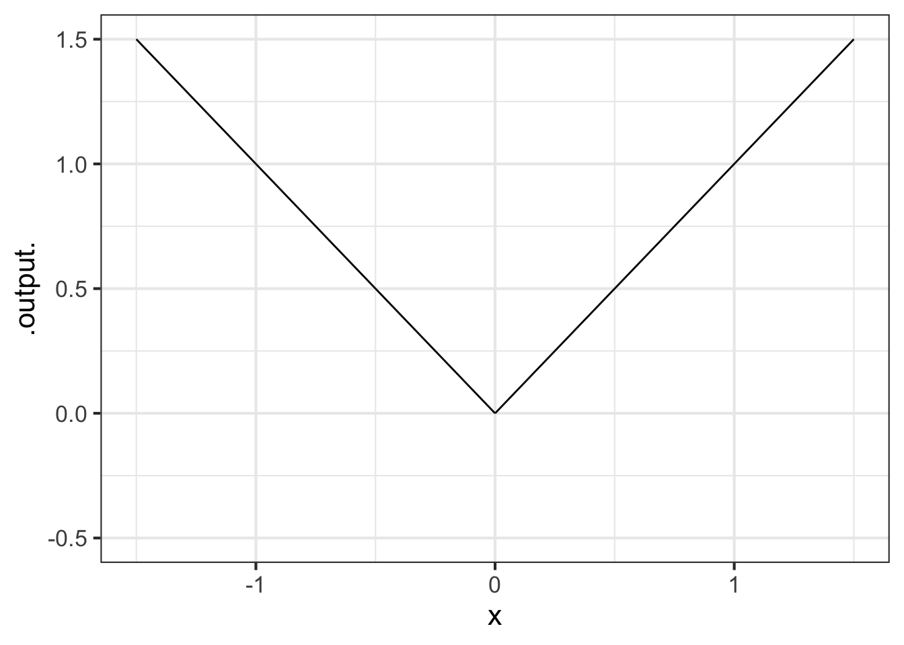
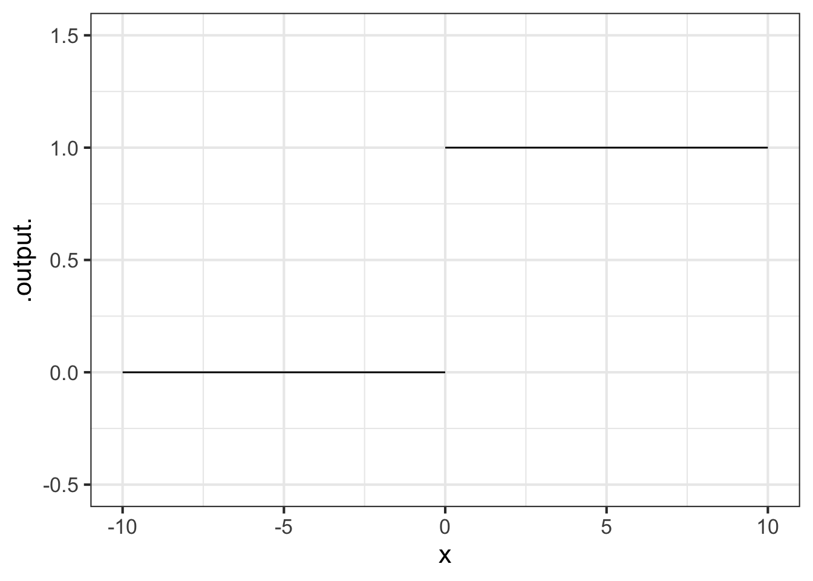

9 Assembling functions
When a modeler needs a new function for some purpose, there are three tactics; the best one depends on the circumstances and the availability of data.
- Assemble the function from combinations of input-scaled pattern-book functions.
This tactic is well represented in Calculus textbooks. I think this is not so much a statement about the power of the tactic, but the general tendency to avoid working with data. For the applications of applied math, data is a valuable resource. When it’s available, as is often the case, there are alternatives to (1) that are available.
Use the data to guide the input and output scaling of pattern-book functions and their generalizations such as the power-law functions introduced in Section 5.2. This is often called “fitting the function”. We will study this tactic and its techniques in Chapter 11.
Split the domain of the desired function into small pieces. Then, for each piece, use very simple functions to capture the local behavior of a function locally. As the simple functions, the lower-order polynomaials
x ~ a xorx ~a x + borx ~ a x^ + b x^2are widely used. The parameters are set entirely by data. This strategy was originally called “statistical learning,” then renamed “machine learning.” These days, “artificial intelligence” is used to refer to a particular strategy of iteration that slowly and gently incorporates data to tease the model parameters into a function that makes good predictions.
This chapter focusses on the mathematical framework for (1). In Chapter 11 we will introduce the incorporation of data used in tactic (2). As for (3), we will need several core concepts of calculus as a basis for understanding, so we mainly defer the tactic to ?sec-splines.
9.1 Linear combination
Section 8.4 introduced the notation of input and output scaling. For instance, Figure 11.6 illustrates how the pattern-book \(\sin()\) function can be customized to model a particular situation. Recall that the input scaling involves inserting a straight-line function inside the parentheses, as in
\[f_1(t) \equiv \sin\left( a t + b\right) \tag{9.1}\]
You may recognize \(at + b\) as a straight-line function. Possibly, your recognition would be easier if we wrote \(at + b\) using different names for the input and the first parameter: \(m x + b\). You have been trained to pronounce \(m\) as the “slope” of the line and \(b\) as the “y-intercept.”
Using both input and output scaling gives a more general kind of function:
\[f_2(t) \equiv A \sin(a t + b) + B \tag{9.2}\]
Math expression 9.2 is an example of a linear combination of two functions. The two functions are \(g_1(t) \equiv 1\) and \(g_2(t) \equiv sin(a t + b)\).
It might be easier to see Math expression 9.2 as a linear combination if the function were written explicitly using the two functions being combined, that is, as
\[f_2 \equiv A g_2(t) + B g_1(t)\]
The combination is made by scaling each of the functions involved then adding the scaled functions together. The two scaling factors, \(A\) and \(B\), could be called “parameters of \(f_2()\),” which indeed they are. It would be good to get used to another word that’s used specifically for the parameters in a linear combination: “coefficients.” The advantage of “coefficients” as a name lies in it marking the parameters as those involved in a linear combination, rather than any of the other ways parameters can be used.
Note that “coefficients” always refers to parameters that are not inside the parentheses of a function. In contrast, often parameters are inside the parentheses as in Math expression 9.1. The parameters \(a\) and \(b\) in \(\sin(a t + b)\) are inside the parentheses. Consequently, \(a\) and \(b\) shouldn’t be called “coefficients.” Sometimes, to emphasize this, parameters in parentheses are called “nonlinear parameters” to distinguish them from coefficients like \(A\) and \(B\).
To illustrate how linear combination is used to create new functions, consider polynomials, for instance, \[f(x) \equiv 3 x^2 + 5 x - 2\ .\] There are three pattern-book functions in this polynomial. In polynomials the functions being combined are all power-law functions: \(g_0(x) \equiv 1\), \(g_1(x) \equiv x\), and \(g_2(x) \equiv x^2\). With these functions defined, we can write the polynomial \(f(x)\) as \[f(x) \equiv 3 g_2(x) + 5 g_1(x) - 2 g_0(x)\] Each of the functions is being scaled by a quantity: 3, 5, and -2 respectively. Then the scaled functions are added up. That is a linear combination; scale and add.
In high school, polynomials are often presented as puzzles—factor them to find the roots! In calculus, however, polynomials are used as functions for modeling. They are a kind of modeling “clay,” which can be shaped as needed.
Linear combination is an extremely important tactic that quantitative workers use throughout their careers. For instance, many physical systems are described by linear combinations. For instance, the motion of a vibrating molecule, a helicopter in flight, or a building shaken by an earthquake are described in terms of simple “modes” which are linearly combined to make up the entire motion. More down to Earth, the timbre of a musical instrument is set by the scalars in a linear combination of pure tones. And throughout work with data in science, commerce, government and other fields a primary data analysis method—called “regression”—is about finding the best linear combination of a set of explanatory variables to create a model function of the response variable.
Identical vs proportional vs straight-line
One of the pattern book functions is very simple; the output is identical to the input:
\[\text{identity}(x) \equiv x\] Multiplying the identity() function by a parameter gives a function that can well be called “proportional().”
\[\text{proportional}(x) \equiv a\ \text{identity}(x) = a\ x\] The parameter \(a\) is often called the “constant of proportionality.”
It’s common to call this closely related function the “linear” function, but a better name is the “straight-line” function. “Straight-line” is the name we shall use in this book.
\[\text{straight_line}(x) \equiv a\ x + b\]
9.2 Function composition
Function composition refers to combining functions by taking the input of one function and feeding it as input to another. “\(g()\) composed with \(h()\)” means \(g(h(x))\).
To illustrate, consider again the function defined in Math expression 9.2: \[f(t) \equiv A \sin\left( a t + b\right) + B\]
You’ve already seen how ?eq-input-outout-scaled-sin is a linear combination of two functions \(f_1(t) \equiv 1\) and \(f_2(t) \equiv sin(a t + b)\). But \(f_2()\) is not a linear combination. Instead, it is a function composition. The two functions being composed are \(sin(x)\) and \(a t + b\), producing \(sin(a t + b)\). Here, \(\sin()\) is the outer function in the composition and \(at + b\) is the inner function.
9.3 Function multiplication
Multiplication is the third in our repertoire of methods for making new functions. To review, here are the first two methods involving combining a function \(f()\) with a function $g():
- Linear combinations. Example: \(n_1(t) \equiv 5 f(t) + 1.2 g(t)\).
- Function composition. There are two possibilities which produce two distinct functions:
- \(c_1(t) \equiv f(g(t))\), that is, \(g()\) is the inner function.
- \(c_2(t) \equiv g(f(t))\), that is, \(g()\) is the outer function.
Now a new method:
- Multiplication of the output of two functions. Example: \(m(t)\equiv f(t) g(t)\). This is perfectly ordinary multiplication. Multiplication is commutative, as illustrated by the equality of \(5 \times 2\) and \(2 \times 5\). Owing to the commutativity of multiplication, it doesn’t matter whether \(f()\) is first or \(g()\) is first.
In function composition, the order of the functions matters: \(f(g(x))\) and \(g(f(x))\) are in general completely different functions.
In function multiplication, the order does not matter because multiplication is commutative, that is, if \(f()\) and \(g()\) are the functions to be multiplied \(f(x) \times g(x) = g(x)\times f(x)\).
\[\underbrace{f(x) \times g(x)}_\text{multiplication}\ \ \ \ \underbrace{{\Large f(}g(x){\Large)} \ \ \text{or}\ \ \ {\Large g(}f(x){\Large)}}_\text{composition}\]
In function composition, only one of the functions—the interior function is applied to the overall input, \(x\) in the above example. The exterior function is fed its input from the output of the interior function.
In multiplication, each of the functions is applied to the input individually. Then their outputs are multiplied to produce the overall output.
Transient vibration
A guitar string is plucked to produce a note. The sound is, of course, vibrations of the air created by vibrations of the string.
After plucking, the note fades away. An important model of this is a sinusoid (of the correct period to correspond to the frequency of the note) times an exponential.
Function multiplication is used so often in modeling that you will see it in many modeling situations. Here’s one example that is important in physics and communication: the wave packet. Overall, the wave packet is a localized oscillation as in Figure 9.2. The packet can be modeled with the product of two pattern-book functions: a gaussian times a sinusoid.

Functions constructed as a product of simple functions can look like this in tradition notation: \[h(t) \equiv \sin(t) e^{-t}\] and like this in computer notation:
h <- makeFun(sin(t)*exp(-t) ~ t)9.4 Splitting the domain
Consider the familiar absolute-value function:

\[abs(x) \equiv \left|x\right|\] Written this way, the definition of \(abs()\) is a tautology: unless you already know what \(\left|x\right|\) means, you will have no clue what’s going on.
Can we assemble \(abs(x)\) out of pattern-book functions? What’s distinctive about \(abs(x)\) is the break at \(x=0\). There is no similarly sharp transition in any of the pattern-book functions.
One way to construct the sharp transition is to view \(abs(x)\) as two functions, one whose domain is the negative half of the number line and the other having a domain that is the non-negative half. That is, we will break the domain of \(abs()\) into two pieces. For the right piece of the domain, \(abs(x)\) is simply proportional\((x)\). For the left piece of the domain, \(abs(x)\) is \(-\)proportional\((x)\).
A function defined separately on different pieces of its domain is called a piecewise function. In the conventional mathematical notation, there is a large \(\LARGE\left\{\right.\) followed by two or more lines. Each line gives a formula for that part of the function and indicates to which interval the formula applies.
\[abs(x) \equiv \left\{ \begin{array}{rl} x & \text{for}\ 0 \leq x \\ - x & \text{otherwise}\\\end{array} \right.\]

Another piecewise function widely used in technical work, but not as familiar as \(abs()\) is the Heaviside function, which has important uses in physics and engineering.
\[\text{Heaviside}(x) \equiv \left\{ \begin{array}{cl} 1 & \text{for}\ 0 \leq x \\0 & \text{otherwise}\end{array} \right.\]
The Heaviside function is defined on the same two pieces of the number line as \(abs()\). To the right of zero, Heaviside is identical to constant(). To the left, it is identical to \(0\) times constant\(()\).
The vertical gap between the two pieces of the Heaviside function is called a discontinuity. Intuitively, you cannot draw a discontinuous function without lifting the pencil from the paper. The Heaviside’s discontinuity occurs at input \(x=0\).
9.4.1 Computing notation
The usual mathematical notation for piecewise functions, spread out over multiple lines that are connected with a tall brace, is an obvious non-candidate for computer notation. In R, the stitching together of the two pieces can be done with the function ifelse(). The name is remarkably descriptive. The ifelse() function takes three arguments. The first is a question to be asked, the second is the value to return if the answer is “yes,” and the third is the value to return for a “no” answer.
To define \(abs()\) or Heaviside\(()\) the relevant question is, “Is the input on the right or left side of zero on the number line?” In widely-used computing languages such as R, the format for asking a question does not involve a question mark. For example, to ask the question, “Is 3 less than 2?” use the expression:
3 < 2In mathematics notation, \(3 < 2\) is a declarative statement and is an impossibility. More familiar would be \(x < 2\), which is again a declarative statement putting a restriction on the possible values of the quantity \(x\).
In computing notation, 3 < 2 or x < 2 is not a declaration, it is an imperative statement that directs the computer to do the calculation to find out if the statement is true or false, or, as written in R, TRUE or FALSE.
Remember that the tilde-expressions given as input to makeFun() are declarative, not imperative. makeFun() stores the tilde expression exactly as is, with symbols such as x being names rather than quantities. makeFun() packages up the stored tilde expression in the form of an R function. The assignment command Heaviside <- ... gives the name Heaviside to the function created by makeFun().
Only when you apply the function created by makeFun() to an input quantity will the tilde-expression be turned into an imperative statement that asks the question 0 <= x and then chooses the second or third argument to ifelse() as the result.
Here’s a definition of Heaviside() written with ifelse().
Heaviside <- makeFun(ifelse(0 <= x, 1, 0) ~ x)Table 9.1 shows computer notation for some common sorts of questions.
| R notation | English |
|---|---|
x > 2 |
“Is \(x\) greater than 2?” |
y >= 3 |
“Is \(y\) greater than or equal to 3?” |
x == 4 |
“Is \(x\) exactly 4?” |
2 < x & x < 5 |
“Is \(x\) between 2 and 5?” Literally, “Is \(x\) both greater than 2 and less than 5?” |
x < 2 | x > 6 |
“Is \(x\) either less than 2 or greater than 6?” |
abs(x-5) < 2 |
“Is \(x\) within two units of 5?” |
9.5 Computing outside the domain
Each of our pattern-book functions, with two exceptions, has a domain that is the entire number line \(-\infty < x < \infty\). No matter how big or small is the value of the input, the function has an output. Such functions are particularly nice to work with since we never have to worry about the input going out of bounds.
The two exceptions are:
- the logarithm function, which is defined only for \(0 < x\).
- some of the power-law functions: \(x^p\).
- When \(p\) is negative, the output of the function is undefined when \(x=0\). You can see why with a simple example: \(g(x) \equiv x^{-2}\). Most students had it drilled into them that “division by zero is illegal,” and \(g(0) = \frac{1}{0} \frac{1}{0}\), a double law breaker.
- When \(p\) is not an integer, that is \(p \neq 1, 2, 3, \cdots\) the domain of the power-law function does not include negative inputs. To see why, consider the function \(h(x) \equiv x^{1/3}\).
It can be tedious to make sure that you are on the right side of the law when dealing with functions whose domain is not the whole number line. The designers of the hardware that does computer arithmetic, after several decades of work, found a clever system to make it easier. It is a standard part of such hardware that whenever a function is handed an input that is not part of that function’s domain, one of two special “numbers” is returned. To illustrate:
sqrt(-3)
## [1] NaN
(-2)^0.9999
## [1] NaN
1/0
## [1] InfNaN stands for “not a number.” Just about any calculation involving NaN will generate NaN as a result, even those involving multiplication by zero or cancellation by subtraction or division.1 For instance:
0 * NaN
## [1] NaN
NaN - NaN
## [1] NaN
NaN / NaN
## [1] NaNDivision by zero produces Inf, whose name is reminiscent of “infinity.” Inf infiltrates any calculation in which it takes part:
3 * Inf
## [1] Inf
sqrt(Inf)
## [1] Inf
0 * Inf
## [1] NaN
Inf + Inf
## [1] Inf
Inf - Inf
## [1] NaN
1/Inf
## [1] 0To see the benefits of the NaN / Inf system let’s plot out the logarithm function over the graphics domain \(-5 \leq x \leq 5\). Of course, part of that graphics domain, \(-5 \leq x \leq 0\) is not in the domain of the logarithm function and the computer is entitled to give us a slap on the wrists. The NaN provides some room for politeness.
One that does produce a number is
NaN^0.↩︎